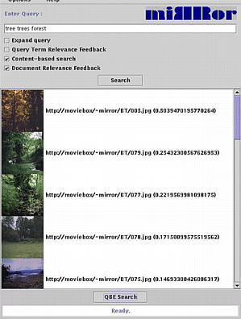
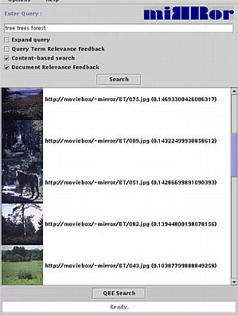

 |
 |
The results of this query using relevance feedback are shown above. The top hits are pretty good images given the original query, but, further down the list, the quality of the result degrades.
Summarizing the query process in this tour, using the concept thesaurus, Mirror may expand a textual query with visual information. Using relevance feedback, the effect of expansion errors can be reduced significantly.
| Prev | To next tour |
 Home: DEMO - The Mirror MMDBMS architecture
Home: DEMO - The Mirror MMDBMS architecture
Last updated: December 9, 1999
Maintained by: arjen@acm.org